Before you start, a few things to know
This is the hub: 20 patients across four rural hospitals, one intensivist watching all of them overnight. Right now Margaret Hayes, at Chadron, looks stable. Her score is 5.
- Open the prototype on Monitoring. If you've already played it, use Prototype › Reset prototype first.
- The hospital tabs across the top start on All hospitals. Click a hospital to see only its patients. Each tab has two counters: the number of patients, then the number of alerts. On the right, Group by hospital groups the patients by hospital.
- Under the tabs, the quick filters and controls bar. On the left, a search over the patients on the page, then the quick filters (My patients, Active alerts, Rising score…), each with a count of the patients it shows. On the right, the controls change how the patients are shown, then sort them. Filters, last, opens a side panel with more filters.
- Each patient has a monitoring card. There are three ways to use it:
- Click the card to open the patient's details page.
- Hover the card and a more actions button (…) appears next to the name. Click it for more actions.
- Click the alert bar to open the alert with more information, so you can act on it faster. You can also open it by clicking the alert notification at the bottom right of the page. The buttons along the bottom of the notification take other actions.
- Alert notifications appear at the bottom right on every page, so you hear about an alert even when you're not on Monitoring. You can pause them with Don't show, above the notifications, or close them. Once closed, they come back when you reload the app or use Prototype › Reset prototype.
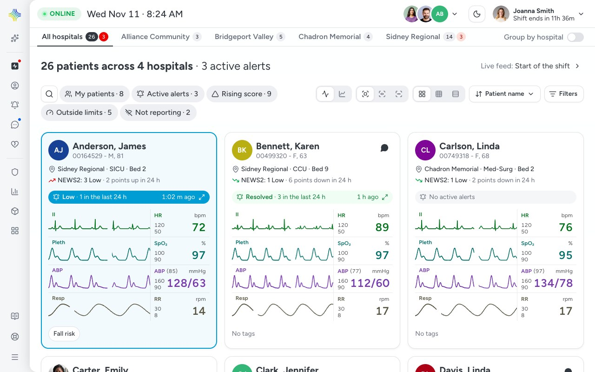
1. Early warning
01:40Overnight her breathing rate climbed from 18 to 26. Her oxygen fell to 89% on 4 liters, her heart rate is 112, and she's 1.8 liters positive and up 2.1 kg in two days. At 01:40 her deterioration score crosses the line: NEWS2 10, up 5 in four hours. Nobody had to be looking at her for this to happen.
Steps
- Open Prototype at the bottom of the Sidebar.
- Pick Scenario 1: Heart failure.
- Wait about 2 seconds. Margaret's Critical toast appears at the bottom right.
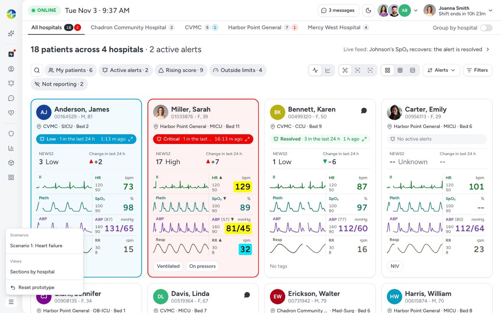
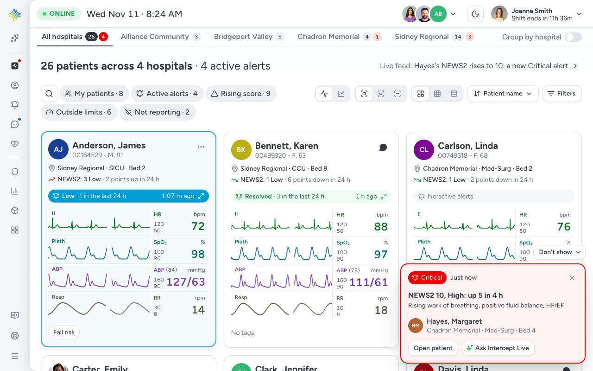
2. Network ranking
01:41Across every patient in every hospital, she jumps to number one, with a reason line a clinician reads in a second: rising work of breathing, positive fluid balance, heart failure with reduced ejection fraction. She's above a patient whose Critical alert is older, because her score is moving fastest.
Steps
- On her toast, click Ask Intercept Live. The chat opens about her and explains why she's #1, then her history and labs.
- Close the chat with its ×.
- Click Live feed, on the right of the page title. Her alert is first, above Sarah Miller's older Critical sepsis alert.
- Close the live feed.
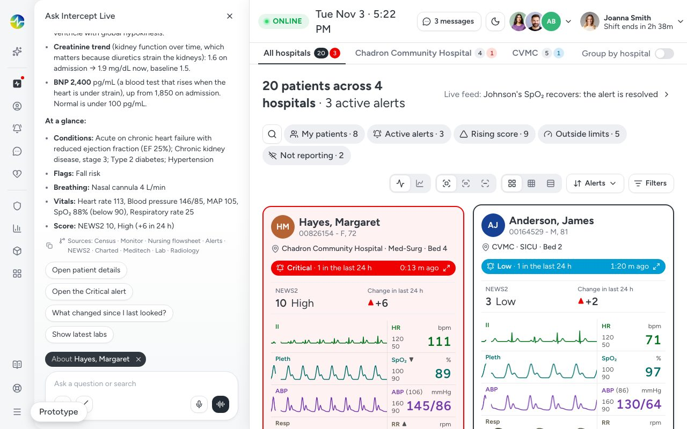
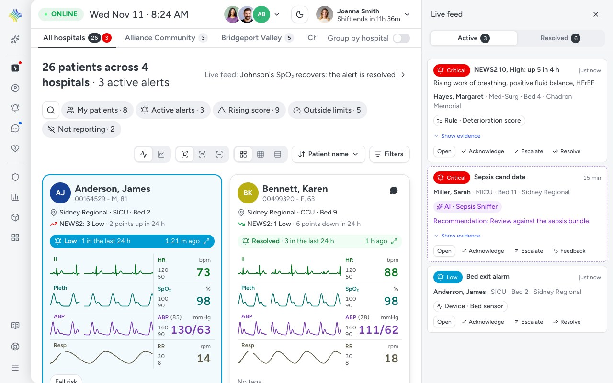
3. One-click consult
01:43One click and the intensivist is looking at the patient with her nurse. Everything they'd normally phone around for was already pulled from the hospital's record into one answer when they asked about her: home meds, the last echo, the creatinine trend, a BNP of 2,400.
Steps
- On Margaret's card (first in the grid), click the red Critical bar. Her alert opens: the reason line, her score, her live monitor and her flags.
- Click her CHF exacerbation flag, first under her monitor (her card has it too, since the alert fired): the findings behind the alert, RR 18 → 26, SpO₂ 89% on 4 L, +1.8 L and +2.1 kg in 48 h, EF 25%. Esc closes it.
- Click Video consult under her alert. It rings for about 4 seconds, then the bedside camera opens in a panel beside the alert.
- Optional: Start notetaker. It asks Kayla to approve, records once she does (about 2 seconds), and Stop and prepare notes drafts a consult note to review and approve.
Shortcut: her card's … › Video consult opens her alert with the call already ringing.
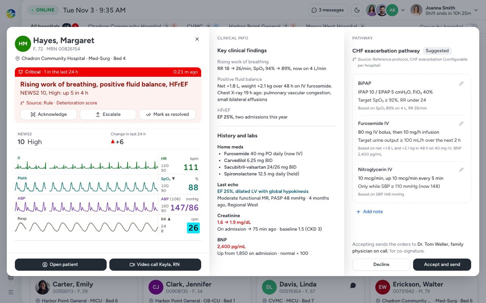
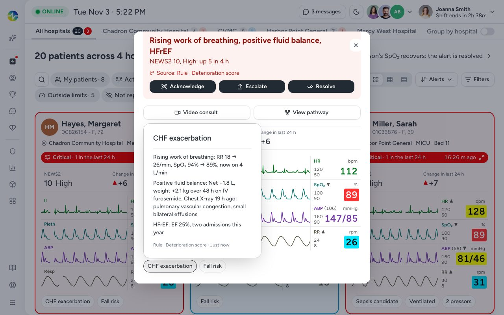
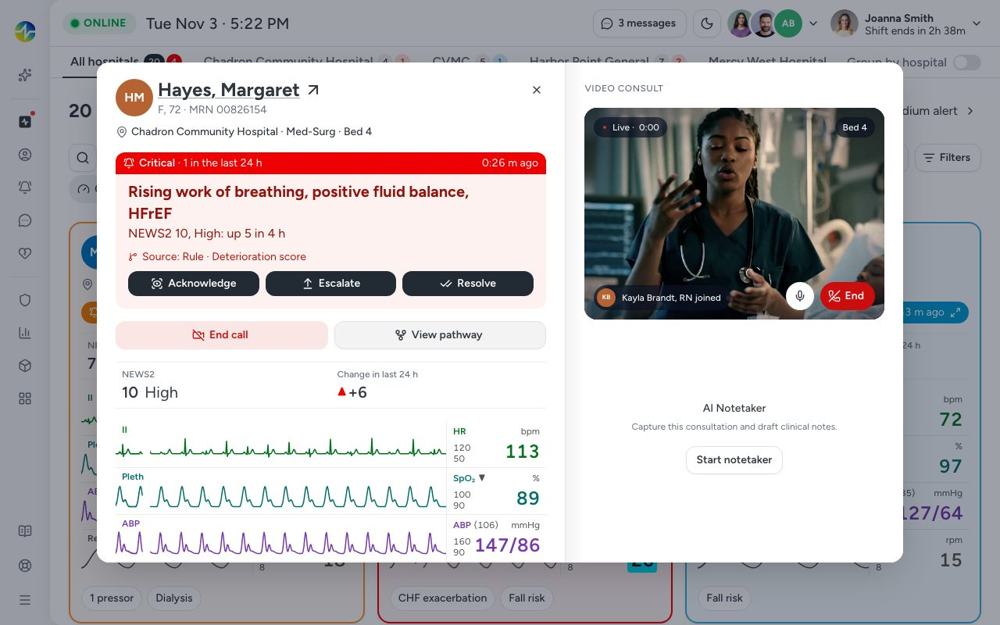
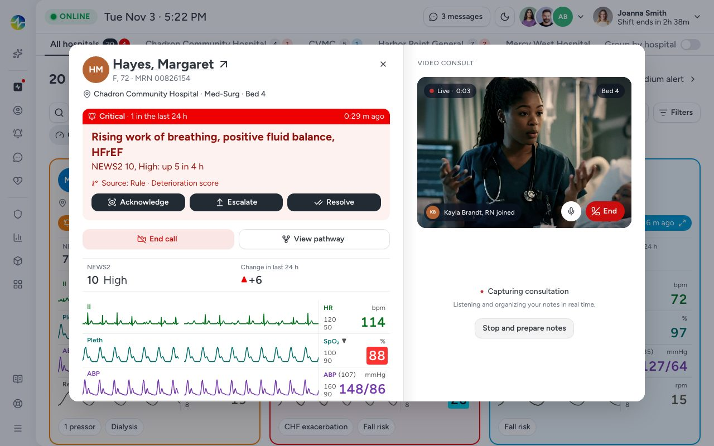
4. CHF exacerbation pathway
01:50The platform suggests the hospital's heart failure pathway: BiPAP, a stronger IV diuretic with a urine-output target, and a nitrate if her blood pressure allows. The intensivist changes one dose and accepts. Nothing is ordered until the family physician on call co-signs it, from home.
Steps
- Click Pathway under her alert. The Pathway panel opens to the right of the call.
- Click the pencil on Furosemide IV.
- Change the dose to 120 mg IV bolus, then 10 mg/h infusion and click Save. It's marked Edited.
- Optional: Add note for Dr. Tom Weller.
- Click Accept and send. About 4 seconds later: Co-signed by Dr. Tom Weller, orders active.
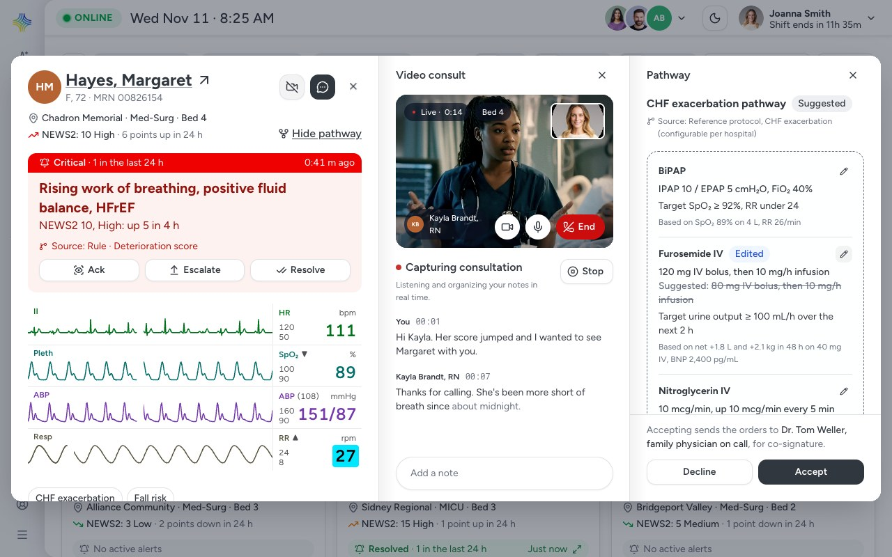
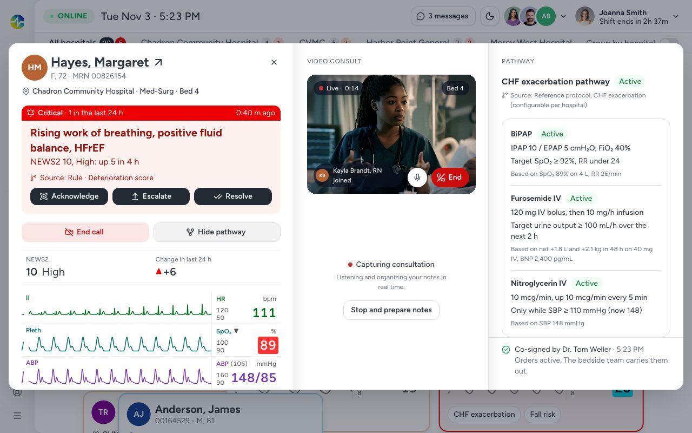
5. Keep or transfer
01:55Can Chadron hold her? The plan needs BiPAP, a respiratory therapist, hourly vitals and nurse time. Chadron has all of it tonight, with the nurse stretched. The alternative is a two-hour ambulance ride. The decision is to keep her, with checkpoints at one and four hours. Miss one and the platform raises the alarm and transfer is back on the table.
Steps
- Scroll the Pathway panel down to Keep or transfer.
- Walk through what the plan needs against Chadron tonight, then the transfer option: Regional West in Scottsbluff, about 2 hours by ground.
- Click Keep at Chadron, type a reason (e.g. BiPAP and RT are here; a 2 h ride is the bigger risk tonight) and confirm.
- The 1 h and 4 h checkpoints appear with their due times.
- Keep her alert open to watch step 6 arrive on its own, about 6 seconds later.
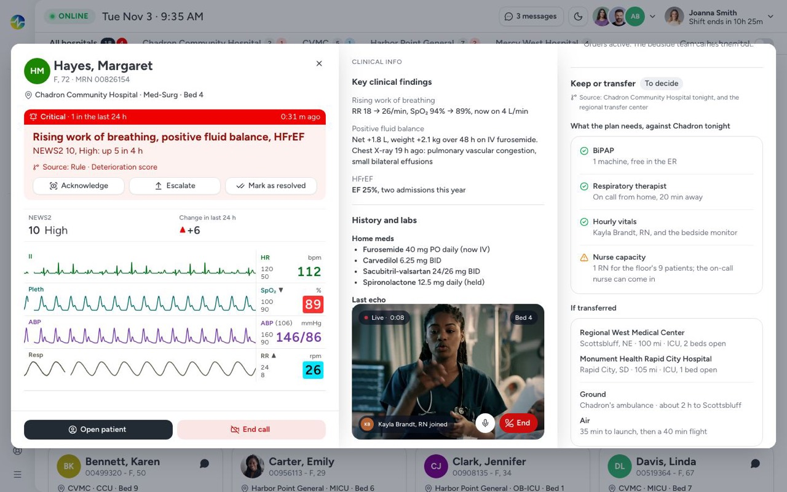
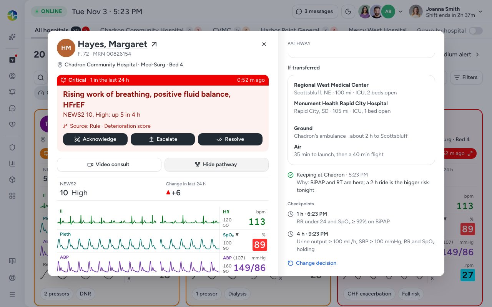
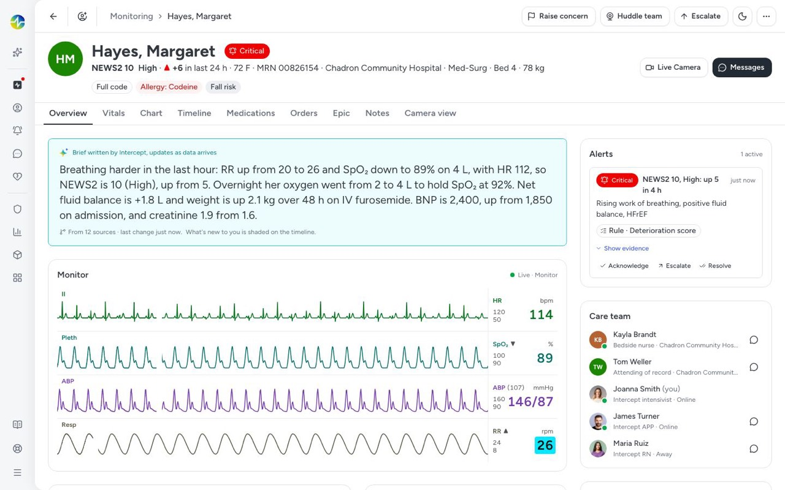
6. Resolution
06:00By six in the morning her breathing rate is 20 and her oxygen is 95% on 2 liters. Both checkpoints passed. The platform logs a transfer avoided: no ambulance, no ICU bed taken 100 miles away, no 100-mile drive for her family, and more than four hours of ICU-level care delivered in her own town.
Steps
- Nothing to click. About 6 seconds after Keep at Chadron it's 06:00: both checkpoints read Passed and Transfer avoided appears at the bottom of the Pathway panel.
- Point out her alert: Resolved, by Kayla Brandt, RN, and her score now NEWS2 3, Low, with RR 20 and SpO₂ 95%. Her CHF exacerbation flag has gone with the alert, here and on her card.
- Close her alert. Her Resolved toast is waiting, the live feed says "06:00: Hayes is stable on 2 L, transfer avoided", and her card has settled.
- Click her card to open her page. Her brief and score are at 06:00 (NEWS2 3). The Care plan reads Keeping at Chadron, both checkpoints Passed and Transfer avoided. Activity lists the night newest first, with who did what; View on Timeline puts it beside her vitals.
- Optional: Orders has the pathway, accepted with your dose and signed by Dr. Tom Weller, its orders active; Notes has the consult note if you approved the notetaker's draft.
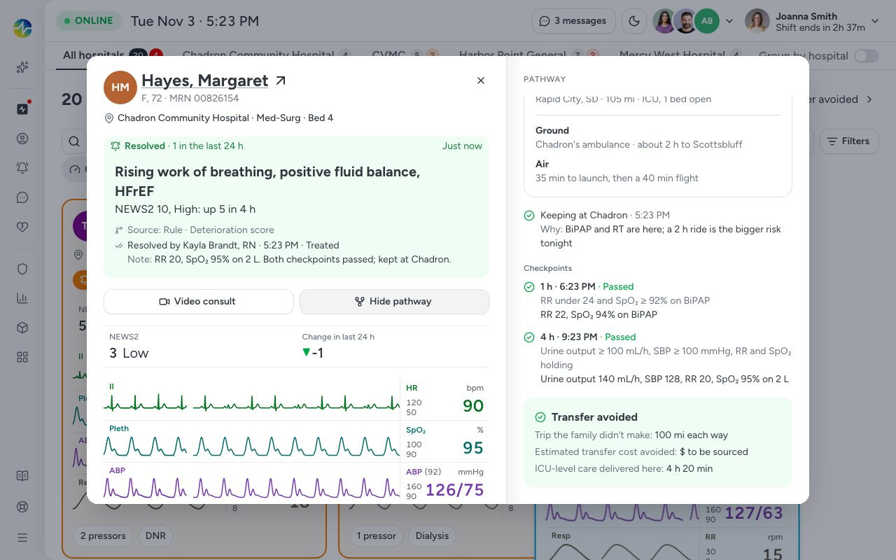
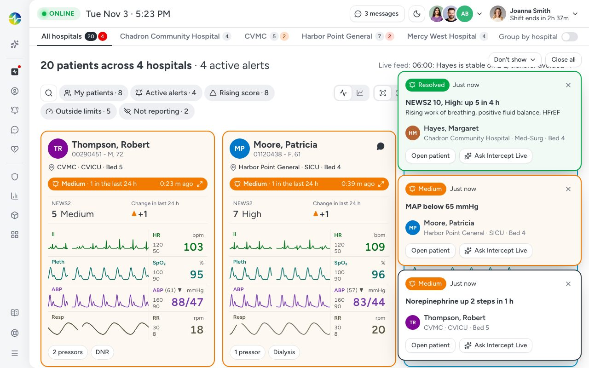
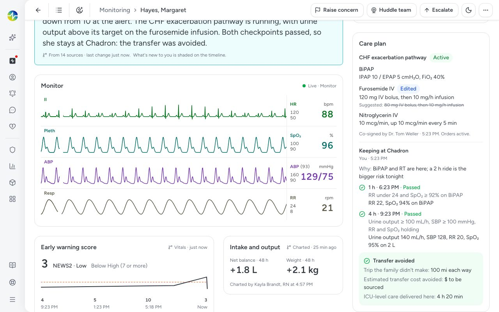
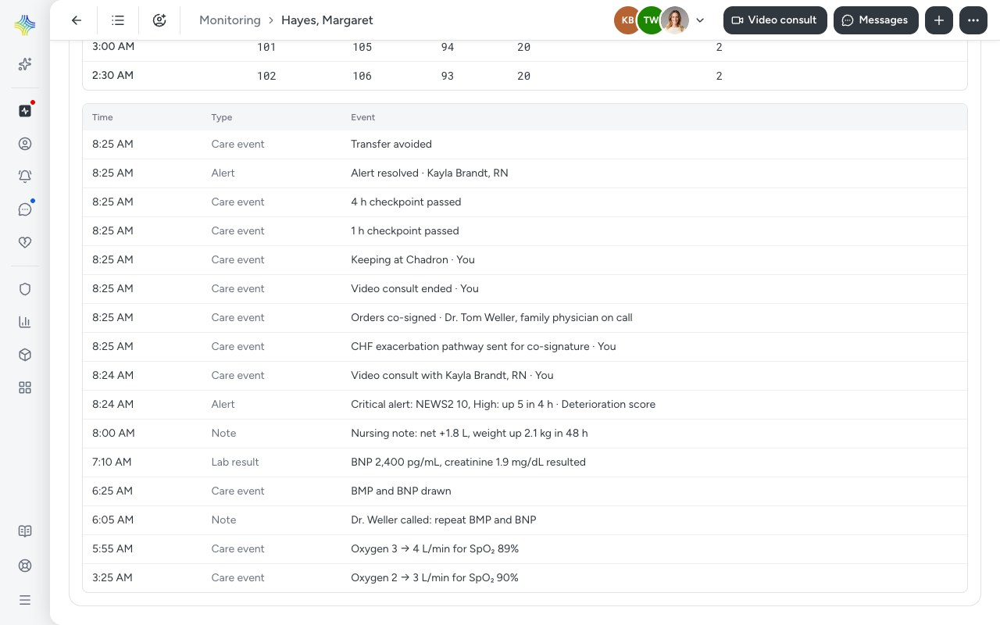
Known gaps
Where the prototype differs from the scenario, in case someone asks.
| What the audience sees | The scenario | Why |
|---|---|---|
| Today's clock time; the night passes in about 6 seconds | 01:40 to 06:00 | The prototype runs on the real clock, so checkpoints pass before their due times, and the night's activity sits at the right edge of her Timeline |
| Doses, capacities, transport times | — | Illustrative; need clinical review |